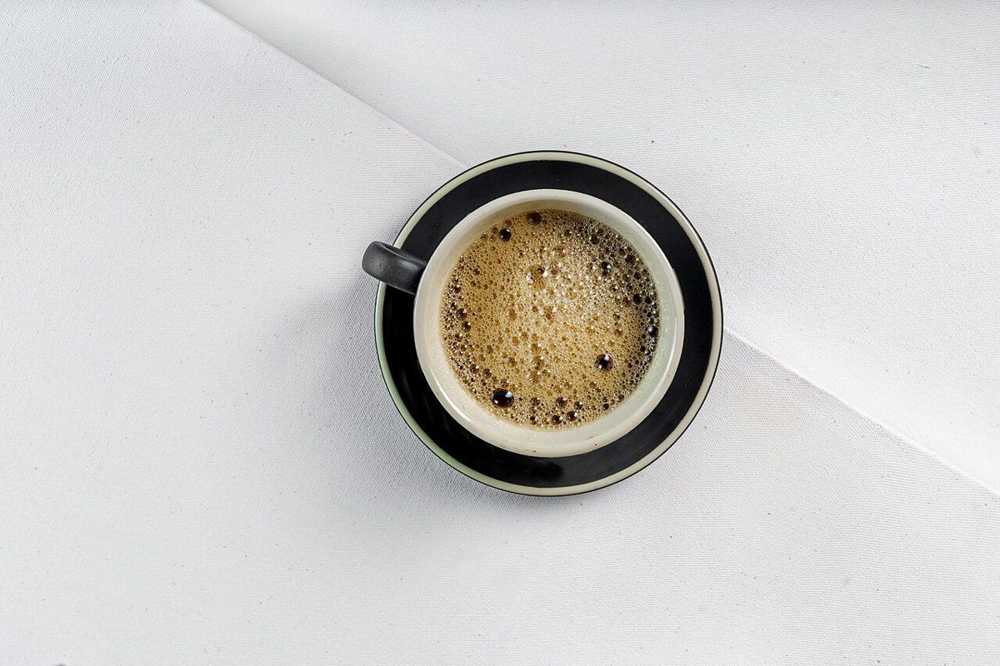

カフェ / 静岡県掛川市
33CAFEトラントトロワカフェ
静岡県掛川市のカフェ「33CAFE トラントトロワカフェ」のご案内ページです。営業時間やメニューなど、詳しいことは準備中。まずはInstagramをのぞいてみてください。

制作側の連想
「33」を、左右に並べてみる
お店の名前の由来は分かりません。制作側は、屋号の「33」という数字から、3と、それを鏡に映した左右反転の3が並ぶ形を連想しました。そこでこのページは、中央に一本の軸を引き、左右に対(つい)のものを置く「合わせ鏡」の作りにしています。制作側の連想で、お店の理念・由来とは無関係です。
対の写真(イメージ)
ふたつ並べると、ひとつの景色。
写真は掛川市やお店のものではありません。形や色が呼び合うものを、国外・撮影地不明のフリー素材から組にしました。
対 一


どちらも無地のカップ。青緑と灰色で、色だけが違います。
対 二


窓辺の本と、テーブルの本。どちらにも飲み物がそばにあります。
対 三


上から見たカップと、近くで見た豆。丸みが呼び合います。
対 四


灰色の木目と、青空の雲。足もとと頭の上の景色です。
ご案内
お店のこと(確認できたものだけ)
| 所在地 | 〒436-0086 静岡県掛川市宮脇2丁目13-2 |
|---|---|
| 電話 | なし |
| 営業時間 | 準備中 |
| 定休日 | 準備中 |
| ご予約 | 準備中 |
| 駐車場 | 準備中 |
| SNS | Instagram @33_CAFE__ |